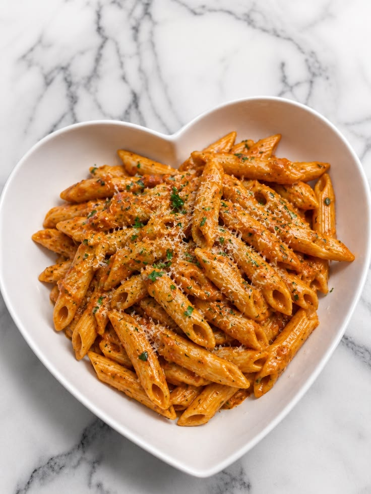

История блюда
Паста с томатами: итальянская классика в домашней кухне
Многие итальянские соусы родились из желания накормить семью просто и быстро. Секрет паста — помодоро лежит в спелых помидорах, хорошем оливковом масле и тёплой воде от варки макарон.
Рецепт пасты